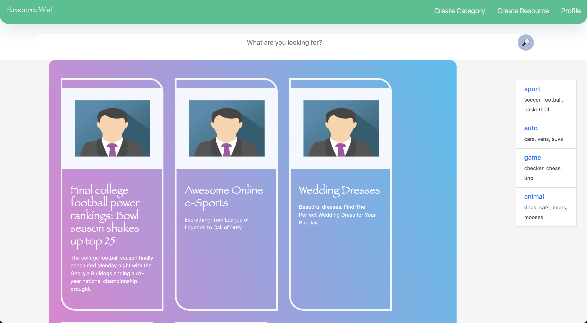
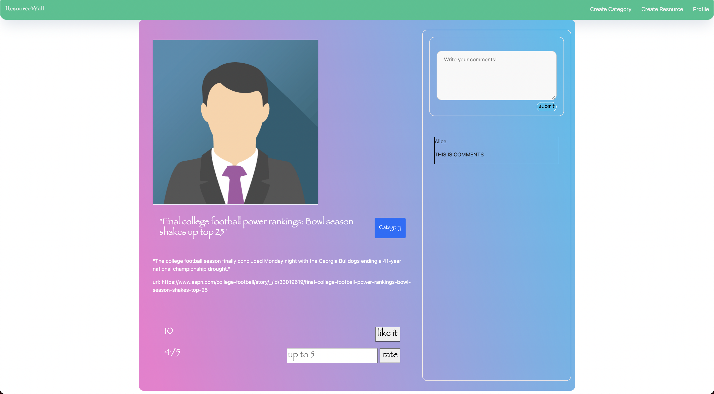

Resource-Wall
external resources library
Clon-code of Pinterest
This project is clone-code the Pinterest which is a user of this website easily register and log in, and then the user can see all the open resources which are saved by other users. That means; this website can see all the external resources from all the users, and available to save the resources by pressing 'create resource'. If a user wants to save an external webpage or links, the user needs to press that button and can see all the resources from my profile.

When the user clicks the resource, available to look up the detail of the resource. It includes descriptions and URLs at the bottom of the image, and like, ratings, and comments will be on the resource detail page. The like and rating will be automatically given the average.
this project is used only Javascript and node-js. create each router in js and ejs files, and used the PSQL database for putting the fake resources or examples.